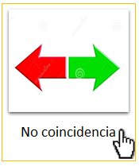
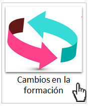
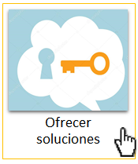
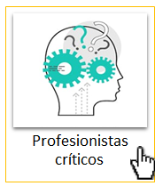
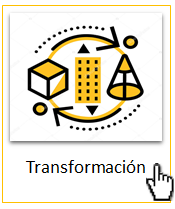
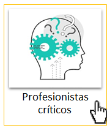
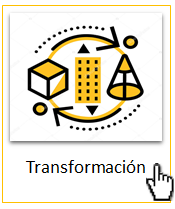

2. Documento Xochimilco o Documento Villarreal
En el marco de referencia del denominado Documento Xochimilco, o Documento Villareal, (2016), que constituye el documento fundante que plantea los lineamientos que van a dar forma al Sistema Modular:



 
 